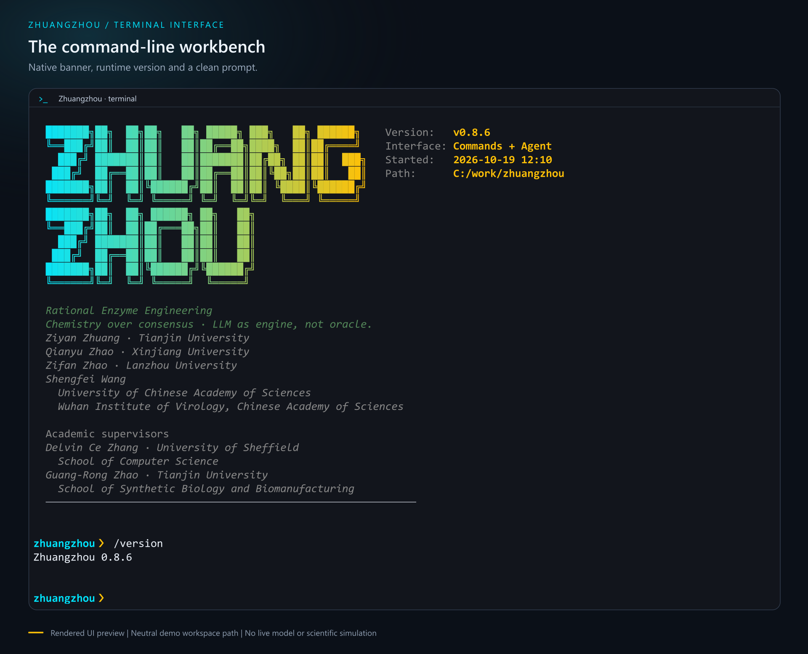

01 / RUNTIME
Agent 与工具基础设施Agent & tool infrastructure
工具路由、参数校验、执行上限与高风险调用确认。Tool routing, parameter validation, iteration limits and confirmation for high-risk calls.
SCIENTIFIC AGENT WORKBENCH
庄周连接自然语言请求、科学工具与执行记录，服务于酶工程、分子建模和代谢工程中的计算任务。Zhuangzhou connects research requests, scientific tools and execution records for enzyme engineering, molecular modeling and metabolic engineering.
研究软件 · Python 3.10+ · 本地命令无需模型 APIResearch software · Python 3.10+ · Local commands need no model API

02 / THE RESEARCH LOOP
模型负责规划与工具选择。执行、观察和复核衔接已有技能与工作流；具体验证能力因模块而异。Models plan and select tools. Execution, observation and review connect existing skills and workflows; verification coverage varies by module.
明确任务，选择工具，检查输入。Define the task, choose tools and check inputs.
调用已注册技能或多步工作流。Run registered skills or a multi-step workflow.
接收结果、状态与生成的文件。Collect results, status and generated artifacts.
检查输出契约与领域复核关卡。Check output contracts and domain review gates.
保留上下文，决定下一步。Retain context and decide what comes next.
计算结果可为 Design → Build → Test → Learn 提供输入。工具执行成功与科学结论成立是两回事，实验验证仍需独立完成。Computational outputs can inform Design → Build → Test → Learn. A successful tool call does not validate a scientific conclusion; experimental verification remains a separate step.
03 / CONNECTED MODULES
可单独使用 Python 模块，也可配置模型后端，从终端编排。外部软件、模型权重和数据库需要另行准备。Use individual Python modules or configure a model backend to orchestrate them from the terminal. External engines, weights and databases require separate setup.
01 / RUNTIME
工具路由、参数校验、执行上限与高风险调用确认。Tool routing, parameter validation, iteration limits and confirmation for high-risk calls.
02 / PROTEINS
变体注释、结构上下文与候选分析；部分功能需要结构文件或模型权重。Variant annotation, structural context and candidate analysis; some functions require structures or model weights.
mutation_enricher ↗03 / MOLECULES
输入准备、执行包装与结果分析；Vina、GROMACS、Amber 等引擎需独立安装。Input preparation, execution wrappers and analysis; Vina, GROMACS, Amber and other engines must be installed separately.
04 / SEQUENCES
元件选择、序列约束、密码子优化及群体基因组工具的输入与命令规划。Parts selection, sequence constraints, codon optimization and input/command planning for population genomics tools.
05 / KNOWLEDGE
代谢模型接口与知识检索，取决于已有模型文件、数据库和配置的服务。Metabolic-model interfaces and knowledge retrieval, depending on model files, databases and configured services.
06 / RECORDS
JSON 工作流、执行历史、会话检查点与报告。恢复上下文不等于重启外部模拟。JSON workflows, execution history, session checkpoints and reports. Restoring context does not restart an external simulation.
04 / SYSTEM MAP
保留项目原始架构插图。图中包含发展方向，各模块的实现与验证范围请结合源码和工程记录判断。The original project illustration includes development directions. Consult source code and engineering records for each module's implementation and validation scope.

05 / GET STARTED
建议使用独立 Python 环境。启动、/help、/version、/status 和 /quit 可离线使用；自然语言 Agent 需要额外安装 nlp 依赖并配置模型后端。Use a dedicated Python environment. Startup, /help, /version, /status and /quit work offline. The natural-language agent needs the nlp extra and a configured model backend.
完整安装与配置说明 ↗Full installation & configuration ↗git clone https://github.com/ZiyanZhuang/zhuangzhou.git
cd zhuangzhou
python -m venv .venv
.venv\Scripts\activate
python -m pip install -e .
zhuangzhou --version
zhuangzhougit clone https://github.com/ZiyanZhuang/zhuangzhou.git
cd zhuangzhou
python -m venv .venv
.venv\Scripts\Activate.ps1
python -m pip install -e .
zhuangzhou --version
zhuangzhougit clone https://github.com/ZiyanZhuang/zhuangzhou.git
cd zhuangzhou
python -m venv .venv
source .venv/bin/activate
python -m pip install -e .
zhuangzhou --version
zhuangzhou06 / ENGINEERING EVIDENCE
离线 CI 覆盖 Ubuntu / Python 3.10 与 Windows / Python 3.12。测试替身用于核验编排，不代表真实模型性能或科学计算有效性。Offline CI runs on Ubuntu / Python 3.10 and Windows / Python 3.12. Fixtures verify orchestration; they do not establish live-model performance or scientific validity.
07 / PEOPLE
天津大学Tianjin University
新疆大学Xinjiang University
兰州大学Lanzhou University
中国科学院大学
中国科学院武汉病毒研究所University of Chinese Academy of Sciences
Wuhan Institute of Virology, Chinese Academy of Sciences
谢菲尔德大学 · 计算机学院University of Sheffield
School of Computer Science
天津大学 · 合成生物与生物制造学院Tianjin University
School of Synthetic Biology and Biomanufacturing